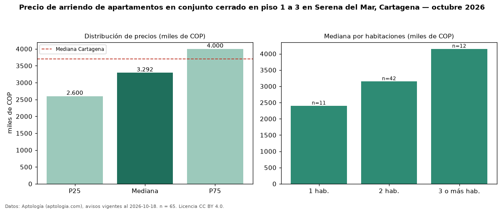

Precio de arriendo de apartamentos en conjunto cerrado en piso 1 a 3 en Serena del Mar, Cartagena — octubre 2026
Con 65 avisos vigentes, el canon mediano de apartamentos en conjunto cerrado en piso 1 a 3 en arriendo en Serena del Mar, Cartagena es COP 3,29 millones al mes. Prácticamente coincide con la mediana de los apartamentos en conjunto cerrado en arriendo de Serena del Mar (COP 3,30 millones, n = 185); este segmento reúne el 35 % de esos avisos. Por metro cuadrado, la mediana es COP 43.205/m² al mes (n = 64), 1 % por debajo de los apartamentos en conjunto cerrado en arriendo de Serena del Mar (COP 43.860/m²). El área mediana anunciada es 74 m². El segmento con más oferta es el de 2 habitaciones (42 avisos, mediana COP 3,15 millones); pasar de 1 habitación a 3 o más habitaciones cambia la mediana +73 %. La administración mediana declarada es COP 464.000 al mes (n = 17), aparte del canon. El estrato más frecuente es 5 (54 % de los avisos con estrato). La mediana de todos los apartamentos en arriendo de Cartagena es COP 3,70 millones (−11 % de diferencia). Datos: Aptología (aptologia.com), CC BY 4.0 — https://www.aptologia.com/arriendo/cartagena/serena-del-mar. Archivos: PDF, CSV con las cifras y gráfica PNG.

| Avisos únicos | 65 |
|---|---|
| Percentil 25 | COP 2.600.000 |
| Mediana | COP 3.291.893 |
| Percentil 75 | COP 4.000.000 |
| Mediana por m² | COP 43.205 |
Fuente: avisos vigentes de portales inmobiliarios recopilados por Aptología, deduplicados (mínimo 30 avisos únicos por celda). Precios pedidos, no cerrados. Fecha: 2026-10-18.